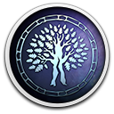

 Thea 2: The Shattering
Details
 |
|
| Playtime | Not Played |
| Last Activity | Never |
| Added | 3/30/2022 12:27:59 |
| Modified | 3/30/2022 12:28:15 |
| Completion Status | Not Played |
| Library | Gog |
| Source | GOG |
| Platform | PC (Windows) |
| Release Date | 11/30/2018 |
| Community Score | 60 |
| Critic Score | |
| User Score | |
| Genre | Indie RPG Strategy |
| Developer | MuHa Games |
| Publisher | MuHa Games |
| Feature | Co-Operative Multiplayer Single Player |
| Links | Store |
| Tag | |
Description
Thea 2: The Shattering is a follow-up to the successful Thea: The Awakening, which brings the idea of innovative genre hybrid, with elements of turn-based, 4X strategy, survival, RPG and a card game, to entirely new and thoroughly polished level.

The player takes on the role of a deity from the Slavic mythology-inspired pantheon and as such, controls the fate of a small flock of believers struggling for survival. This goal can be achieved in many ways, from diplomacy to war, from exploring to conquering, but any playstyle will surely lead to completely unique adventures thanks to the procedurally generated environments. Rich options, from crafting to town-building system, as well as the co-op multiplayer gameplay, make Thea 2 an ideal choice for tactically minded players, who are up for a challenge.

The player takes on the role of a deity from the Slavic mythology-inspired pantheon and as such, controls the fate of a small flock of believers struggling for survival. This goal can be achieved in many ways, from diplomacy to war, from exploring to conquering, but any playstyle will surely lead to completely unique adventures thanks to the procedurally generated environments. Rich options, from crafting to town-building system, as well as the co-op multiplayer gameplay, make Thea 2 an ideal choice for tactically minded players, who are up for a challenge.
Key features:
- Explore rich, procedurally generated and diverse new environments and biomes.
- Expand your influence in the world, build towns, widen your territories or choose the much tougher path of a nomad.
- Exterminate your way to victory, battle through the vast array of creatures or simply strive to survive till sunrise.
- Exploit the many wonders of the land - discover and combine resources, collect materials and craft them into your equipment.
- Become a deity of Thea and direct your Chosen to victory in a world inspired by Slavic myth and folklore.
- Play together - co-op mode for up to 3 players allows you to build your pantheon with friends.
- Choose your playstyle - become a warlord or a diplomat, or simply remain an outsider wandering the world in search of glory.
- Survive any way you can and choose your challenge style as you resolve conflicts via battle, mental or spiritual challenges.
- Free DLCs, built-in adventures editor and other modding tools.